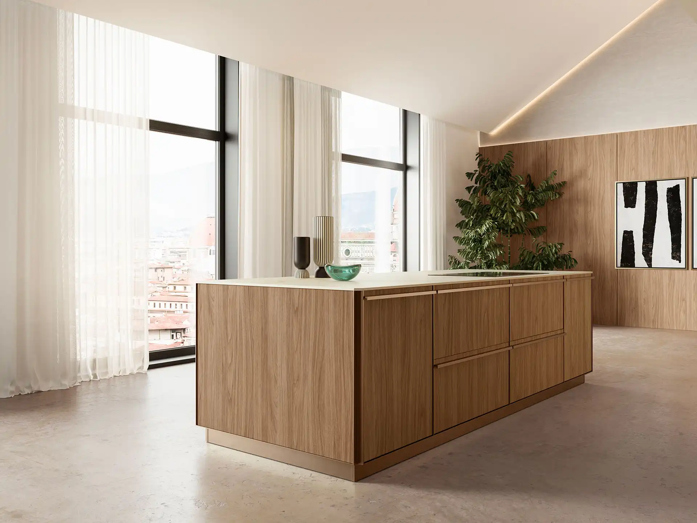

Cuisine italienne
à Bordeaux
Échoppe, appartement en pierre de taille ou maison neuve : une cuisine italienne à la mesure de Bordeaux.
Votre cuisine
à Bordeaux
Bordeaux est à environ 350 km du showroom FirstDiff de Tours. Les projets girondins se mènent à distance, par téléphone et par e-mail, avec une pose confiée à un cuisiniste partenaire de la région.
L’échoppe bordelaise, longue et étroite, demande une implantation bien pensée : cuisine linéaire avec îlot, ou cuisine en L ouverte sur le jardin. Dans les appartements en pierre de taille, la hauteur sous plafond permet des colonnes de grande hauteur.
Tirer parti d’une pièce en longueur
Dans une échoppe, un grand linéaire de colonnes intégrant four, réfrigérateur et rangements libère la vue, et un îlot avec plan en grès devient le centre de la pièce de vie.
Fabriquée en Italie, pensée pour durer
Cinquante ans de savoir-faire, une usine à Caneva, au nord-est de l’Italie, et plus de deux cents finitions.
Caisson
Panneau de classe E1, à faibles émissions, issu de bois recyclé.
Façades
Laques, bois, Fenix, Lamitech, verre ou grès, selon la collection.
Charnières
En acier, à fermeture amortie, réglables dans les trois directions.
Certifications
ISO 9001, ISO 14001, FSC et CARB2 pour le site de production.
Un projet
à Bordeaux ?
Appelez-nous de 9 h à 19 h, ou laissez vos coordonnées : nous vous rappelons.
Intervenez-vous en Gironde ?
Oui, la Gironde fait partie de notre secteur, comme la Dordogne et le Lot-et-Garonne. La pose est assurée par un cuisiniste partenaire.
Comment avancer le projet sans venir à Tours ?
Avec le configurateur 3D, des échanges par téléphone et par e-mail, et une proposition détaillée. Une visite au showroom de Tours reste possible sur rendez-vous.
Comment se déroule un projet ?
Vous composez votre cuisine dans le configurateur 3D ou vous nous décrivez vos envies. Nous vous appelons pour préciser les mesures, l’usage et le budget, puis vous recevez une proposition détaillée, finitions et électroménager compris. La cuisine est fabriquée en Italie, puis livrée et posée par un cuisiniste partenaire.